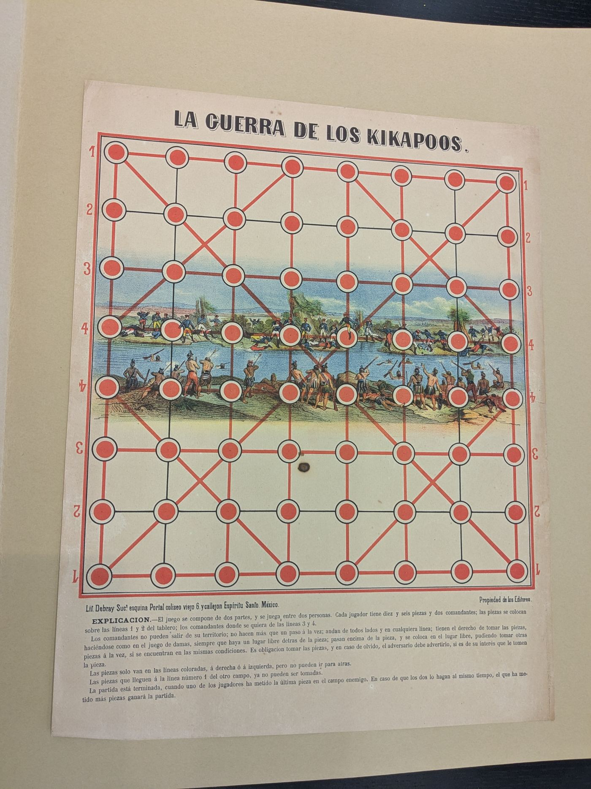
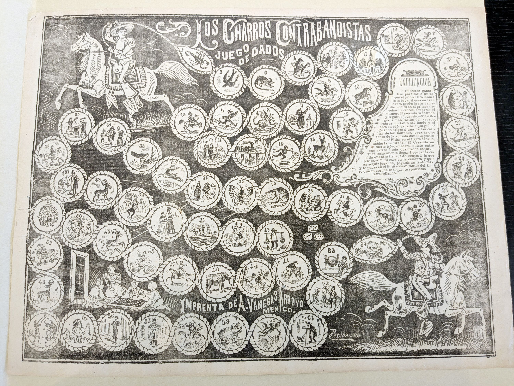
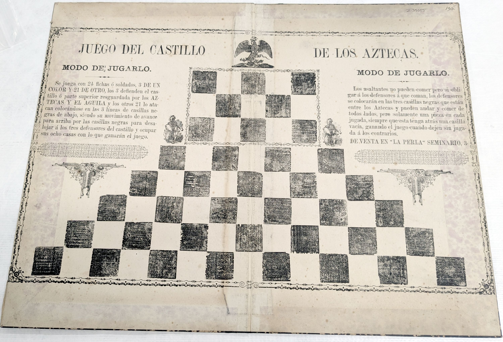
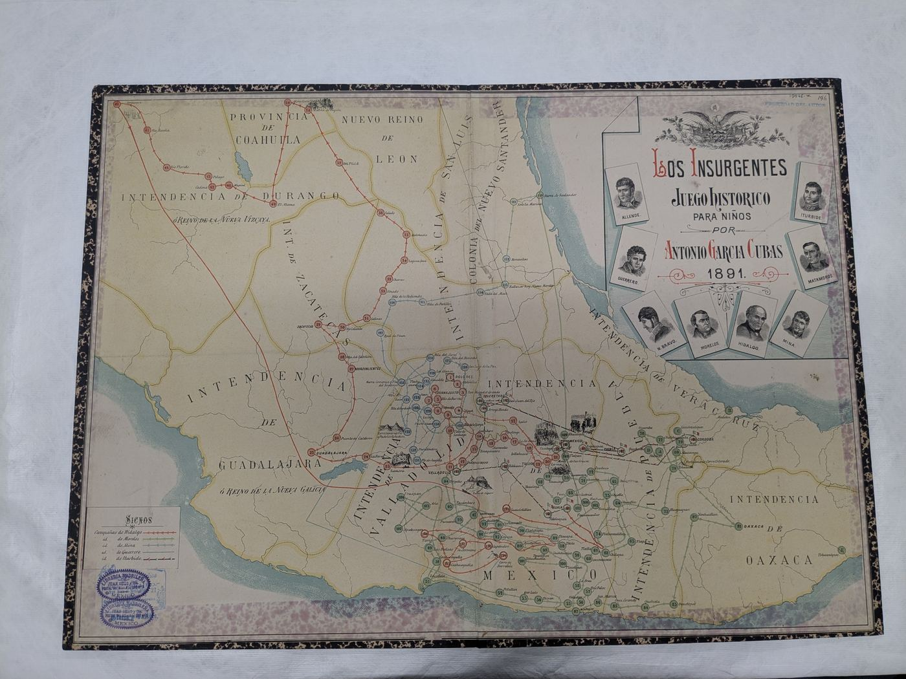
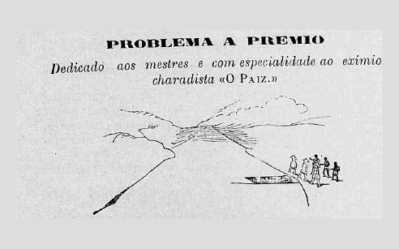
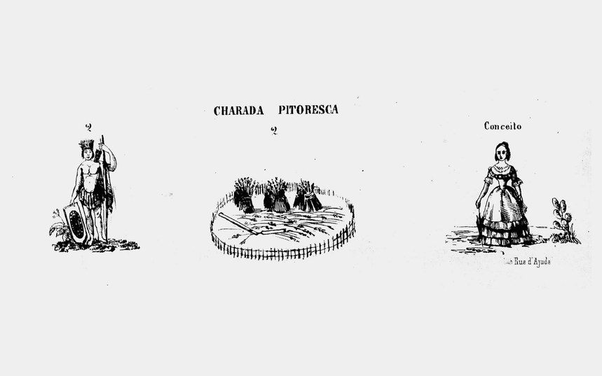
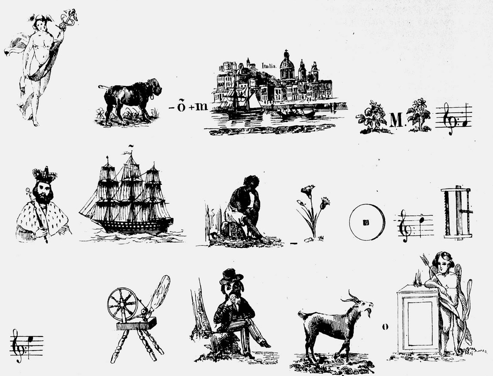

From the Nineteenth Century to Today — historic games and puzzles that you can play.
Why am I playing?
Nineteenth-century board games and puzzles from Mexico and Brazil contributed to the construction of racial imaginaries. When you play these games, try to identify the racial ideas built into the gameplay. This type of cultural production was more than just fun and games.

"The Kickapoo War"
A checkers-style capture game imagining conflict along the Rio Grande — sixteen pieces and two territorial commanders per side, with mandatory captures and multi-jump chains. What does the player perspective tell you about nationalism?

"The Cowboy Bandits"
A 64-space dice race across urban and rural Mexico. Roll, move, and try to outrun the field to the finish. See what types of characters you encounter.

"The Game of the Aztec Castle"
A two-player siege game rebuilt from a nine-row antique board: attackers press in from the camp, defenders hold the castle. No dice — just position and nerve. What does this game suggest about national identity?

"The Insurgents"
A 151-space dice race laid directly over an 1891 map of Mexico, tracing five insurgent campaigns — Hidalgo, Morelos, Mina, Guerrero, Iturbide — from Dolores to the capital. The game is a lesson in territory: intendencias, provinces, a nation drawn one campaign at a time. What kind of cartographies gets left out when this one gets made?

“A Problem with a Prize” · The canoe riddle
A prize riddle from a Rio de Janeiro humor magazine, printed two years before abolition: get three enslavers and three enslaved men across a river in a two-seat canoe. The rule you must obey assumes the enslaved will kill if they ever outnumber their enslavers. What do you have to believe in order to win?

“A Picture Charade”
An 1854 picture puzzle from one of Brazil's first illustrated magazines: turn three images into syllables and spell out a word. A man in a feathered headdress and a fringed waist wrap, a fenced field and a woman in a crinoline add up to a single answer. What does the sum say about who belongs to the nation?

“A Picture Enigma”
Printed on the same 1854 page as the charada: seventeen small pictures hide a whole sentence, a love note to someone named Ramiro. Most are ordinary things, a dog, a ship, a goat. One makes you assume a connection between skin color and freedom. What does it take to finish the sentence?